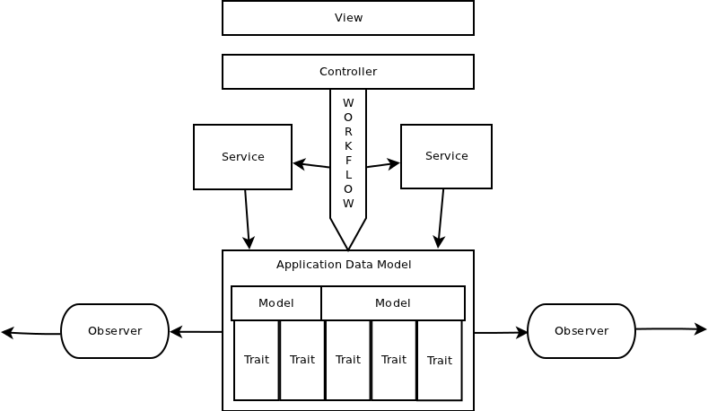

Bogdan G.
- is 7 years in IT
- is 3 years with Ruby and Rails
- Contributed to:
- Rails
- wait for my features in 3.2
- Deeply understands Rails internals
- In context of Rails moving direction
- Resque and about 5-7 plugins
- Knows something about high load
- Many others
- Write missing features
- Fixes all bugs along the way
- Rails
- Created
- datagrid - 180+ watchers
- js-routes - 100+ watcher
Scope of this presentation
Scope:
- Create
- Update
- Delete
Not the scope:
- Select
Why the problem appear?
All business logic code goes to model by default.
Why it should not be in controller?
Because controller is hard to test, maintain and reuse.
Why it should not be in view?
Many reasons
Existing techniques
- Services
- Separated utility class
- Observers
- Event listeners
- Traits
- Modules that get included to models
The problem is to understand which one fit best for you.
What do we expect?
- Agile process
- Reusability of the code
- Easy to test
- Make the data safe
The need of Services
When amount of utils that supports Model goes higher
extract them to service is good idea.
# move
User.create_from_facebook
# to
UserService.create_from_facebook
# or
FacebookService.create_userServices
The most common way to extract logic from model is create a service.
Service is separated utility class.
module CommentService
def create(attributes)
comment = Comment.create!(attributes)
deliver_notification(comment)
end
end"Я знаю откуда что берется"
The problem of services
Services don't provide default behavior
Need of Default Behavior
Object should incapsulate behavior:
- Data Validation
- Set of rules that model should fit at programming level
- Comment should have author
- Set of rules that model should fit at programming level
- Business rules
- Set of rules that model should fit to exist in real world
- Comment should deliver email notification
- Set of rules that model should fit to exist in real world
(Circles here)
What is a model?
The model is an imitation of real object
that reflects some it's behaviors
that we are focused on.
Wikipedia
Implementation
Using builtin Rails code:
- ActiveModel::Observer
- ActiveRecord::Callbacks
Have the following benefits:
- Reduce number of conventions
- Suites to common knowledge - nothing more than Rails
Observers
Model sends it's events to observer automatically and observer is calling a hook.
class CommentObserver < AR::Observer
def after_create(comment)
send_comment_notification(comment)
end
end- + Model doesn't depend on the notification code
- - Some folks say: "Observers Not done well in Rails"
Hooks in models
We create default behavior and our data is safe.
Example: Comment can not be created without notification.
class Comment < AR::Base
after_create :send_comment_notification
endComparation with Service
Comment.create
# or
CommentService.createReimplement other person's API
has more wisdom than invent new one.
Edge cases
In all cases data created in regular way
In one edge cases special rules applied
Service with options
Plan A:
module CommentService
def create_with_notification(attributes)
def create(attributes)
endMaintenance problems:
- Hard to keep all team informed about all services in the App
- Hard to support as number of options goes higher
Services with options
Plan B:
module CommentService
def create(attributes, skip_notification = false)
end- Method will be a mess as number of options goes higher.
- Don't respect functional paradigm
Default behavior and edge cases
The property of default behavior in this example:
- Hey model, create my comment.
- Ok
- Hey model, why did you send the notification?
- Because you didn't say you don't need it
- Hey model, create model without notification
- Ok
Observers with option
class Comment < AR::Base
attr_accessor :skip_comment_notification
end
class CommentObserver < AR::Observer
def after_create(comment)
unless comment.skip_comment_notification
...
end
end- Hard to access to model internals
- Some observer code stays in model
- Have some problems with testing
- Makes the app more fragmented
Support parameter in model
class Comment < AR::Base
attr_accessor :skip_comment_notification
def after_create
unless self.skip_comment_notification
send_comment_notification
end
end
end#skip_comment_notification is used only in edge cases.
Observers are effective when
no direct access to observed class
Example: when it is part of some library inside
a fat enterprise project
Model stands for should
Service stands for could
Observer stands for big fat enterprise
The model is still fat.
What to do?
Use traits
class Comment < AR::Base
include Traits::Comment::Notification
endNotification module encapsulates a feature
Traits is Vertical slicing
Unlike MVC which is horizontal slicing.
Vertical slicing
Split model into Traits
class User < AR::Base
include Traits::User::Facebook
include Traits::User::Linkedin
include Traits::State::CanBeDisabled
end
module Facebook
has_one :facebook_profile
def connected_to_facebook?
...
end
module CanBeDisabled
scope :disabled
scope :enabled
def disable!
def disabled?
endBasic application architecture
| View | ||
| Controller | ||
| Thin model | ||
| Trait | Trait | Trait |
This is OOP
Traits include all staff that can be defined in model
- Scopes
- Associations
- Validation
- Callbacks
How to do it?
Lets split Model code into groups by:
- associations
- attributes
Dependency tree

Associations and Traits
Associations is a base for Traits technique.
belongs_tois a core of a model- This associations is used in almost all methods.
has_manyis usually better to create a slice- Methods with this associations is usually independent from each other.
How to not get lost?
If A depends on B
then B should not depend on A
Traits best practices
- Apply pattern to multifunctional models only
User
Traits name space with the same name as model
Traits::User::Facebook
Use OOP:
- Abstract method
superis super
Api consistency
- "name", "subject", "title" => select one
- "disabled", "inactive", "deleted" => select one
Libraries using traits
- ActiveRecord
- Authlogic
- Devise
- Datagrid
If it is possible for such a complicated library
then it is easy for regular projects
Enterprise world
Agile projects are well focused
Enterprise apps use to do everything.
That is why:
- More huge web forms
- More complicated data structure
- More significant updates
Flow nature and Event nature
Service has flow nature:
- goes step by step
- order can matter
- call each other
- dependent
Observers and Callbacks have event nature:
- one can spawn more than one other events
- can be parallelized
- don't call each other
- can be backgrounded
Super advanced logic infrastructure
